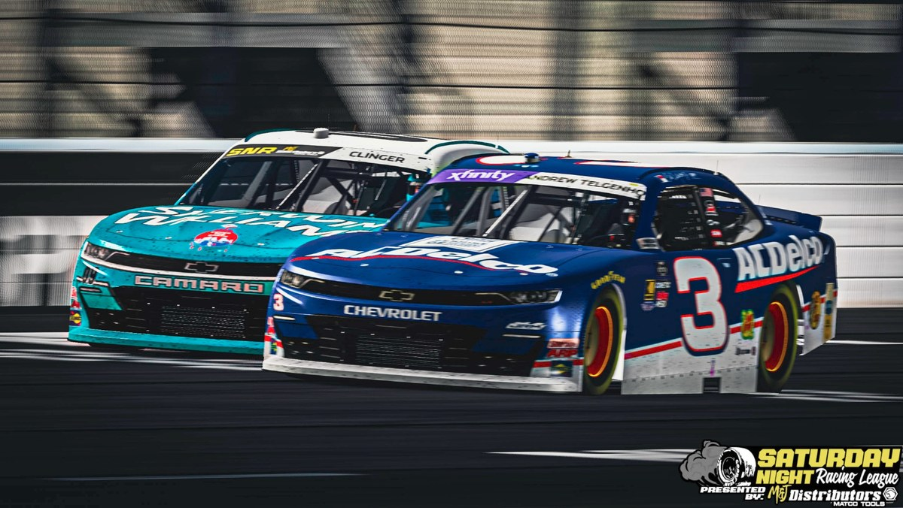

Telgenhof Storms from P32 to Victory Lane at EchoPark Speedway

The Saturday Night Racing League Cup Series visited newly paved EchoPark Speedway for the first time in series history last Saturday Night and the on-track action did not disappoint!
Only one yellow flag flew on lap 47 of the 130 laps for an accident involving front-row starter #1 Eldon Stewart, who would DNF for a 38th place finish in the 40-car field.
Clean and green the rest of the night, but the battle for the lead never subsided. The race saw 7 different race leaders through the course of the night. #48 Jeff Wright led a race-high 82 laps before a hardware failure ultimately took him out of contention, settling for 34th. #35 Joshua Banks led 17 laps, followed by #98 JR Shepherd (14) and #24 Bailey Turner (11) as the only double-digit lap leaders of the night.
After green flag pit stops cycled out on lap 117, it was Bailey Turner taking the race lead followed by Joshua Banks, Andrew Telgenhof, Chad Clinger, and Phillip Brewer. Turner would continue to lead until Telgenhof, Clinger, and Brewer formed an outside lane to complete a pass with 3 laps to go.
With help from Chad Clinger, it was Andrew Telgenhof taking the checkered flag for his 2nd victory of the season. Telgenhof won the SNR 500 at Daytona International Speedway on February 21st, 2026 and is now 1 of 3 drivers with multiple victories in Season 6 (Wright 3x, Turner 2x).
Telgenhof’s victory at EchoPark Speedway surged him +9 positions in the standings, where he now sits tied for 15th with Max Kost — just 9 points back of the final Chase transfer spot, currently held by Chuck Sweeting in 14th.
The SNR Cup Series heads to Texas Motor Speedway next Saturday, May 2nd, on the newly repaved configuration. The last time the Cup Series visited Texas was Season 4 on February 8th, 2025, where Bailey Turner scored the victory.
Tune into VSPEED next Saturday Night at 10:00 PM EST for all the on-track action!